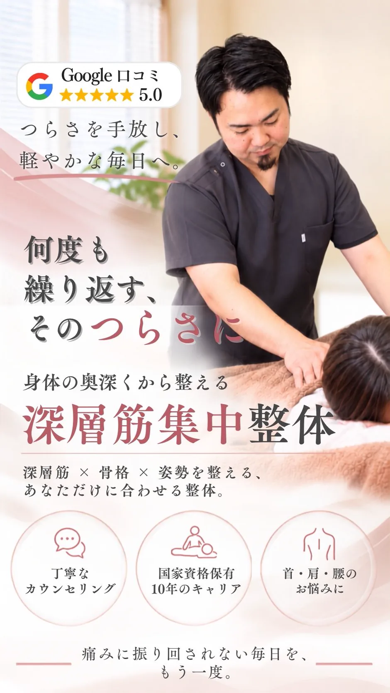
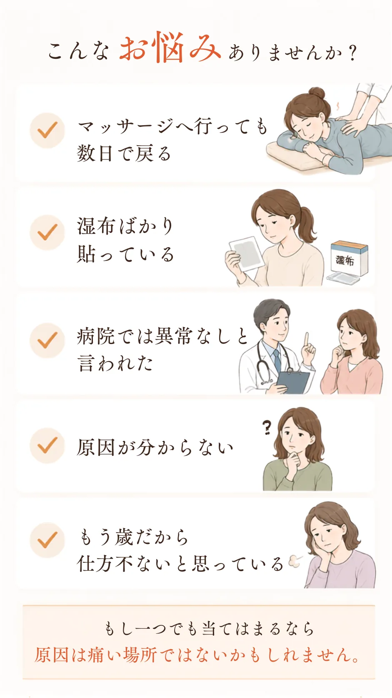
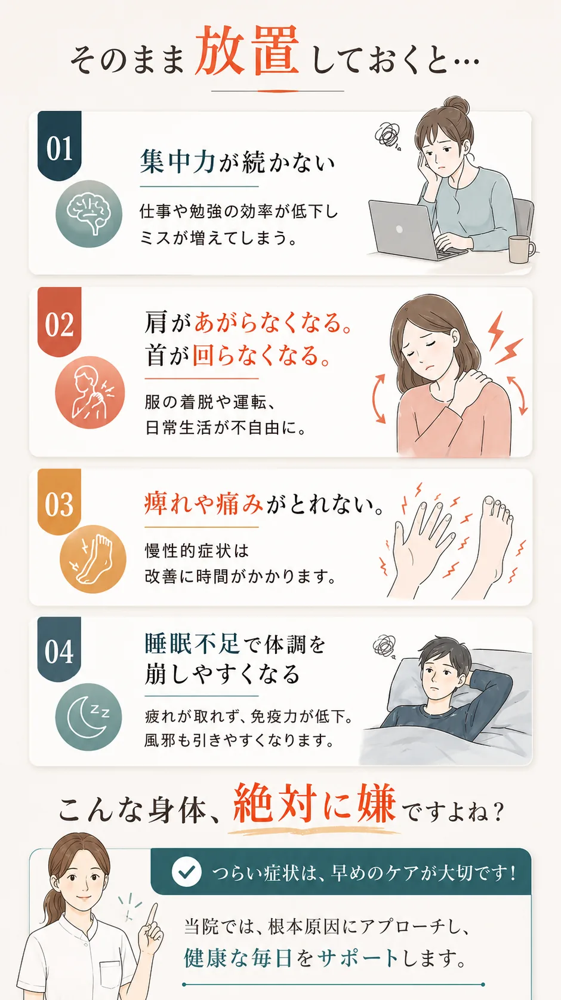
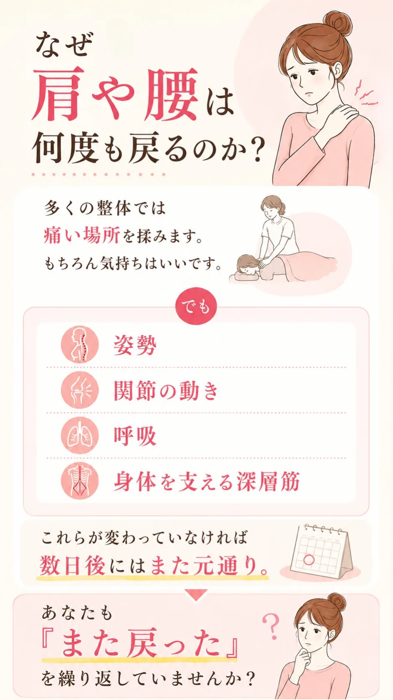
私たちの
「深層筋集中整体」なら、
それを解決できます。
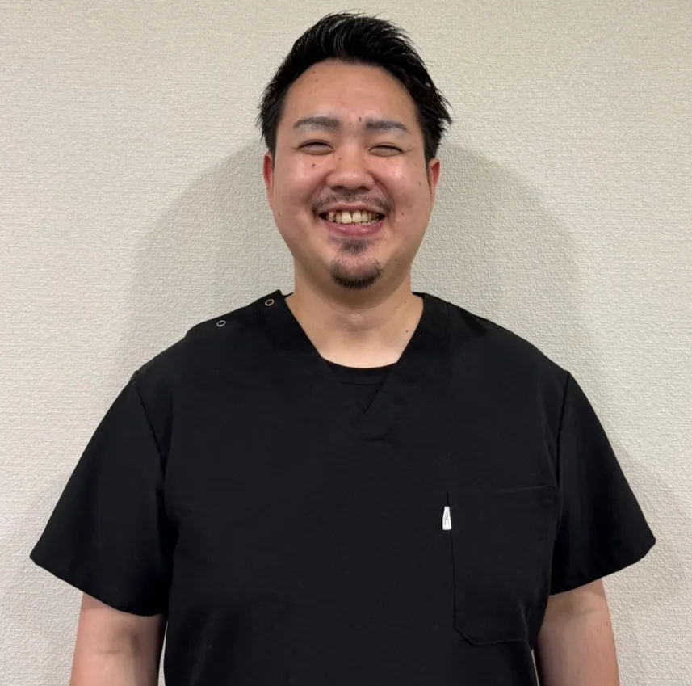
院長 今坂智和
国家資格保有者
▼ 院長からのメッセージをご覧ください
私の10年の経験から独自に生み出したオリジナルの深層筋集中整体で、表面の筋肉をもみほぐす一般的な施術とは異なり、骨に最も近い深部のコリをピンポイントでとらえます。また、同時に固まってしまった関節の動きをだしていき、お身体を本来あるべき姿に戻していきます。
そうすることで
「何をしても戻る首肩のコリ」を
根本から解消します。
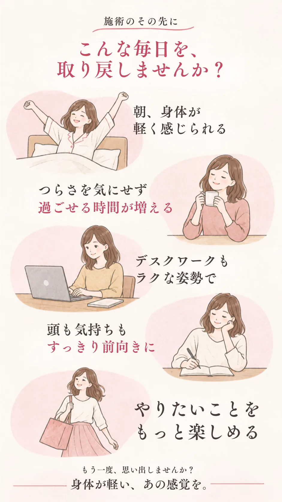
まず一度、その身体で他との違いを感じてください。
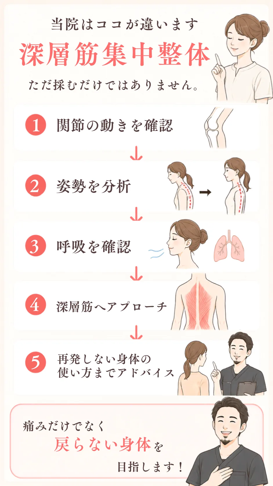
当院が選ばれる
3つの理由
独自の「深層筋」アプローチ
10年の経験・臨床1万件
表面の筋肉だけを揉みほぐす一般的な施術とは異なり、骨に最も近い深部のコリをピンポイントで捉えます。10年以上のキャリアと1万件を超える施術実績で培った独自技術です。
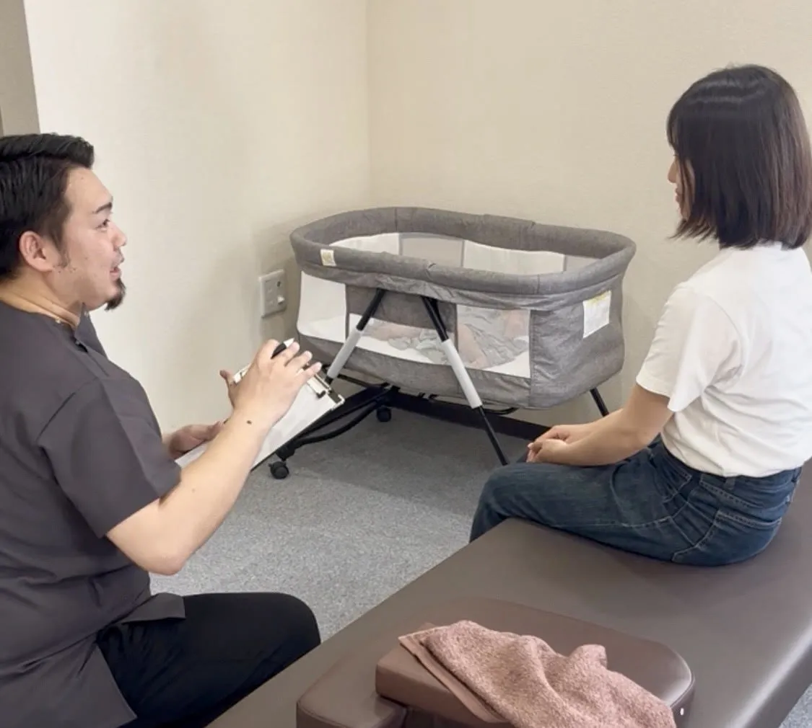
痛みの「本当の原因」を見抜く
徹底カウンセリング＋担当制
なぜ痛むのか。その理由は一人ひとり全く異なります。国家資格者の知見に基づき、あなたの日常生活のクセから痛みの引き金を探り出します。院長が最初から最後まで担当するので、細かい変化も見逃しません。
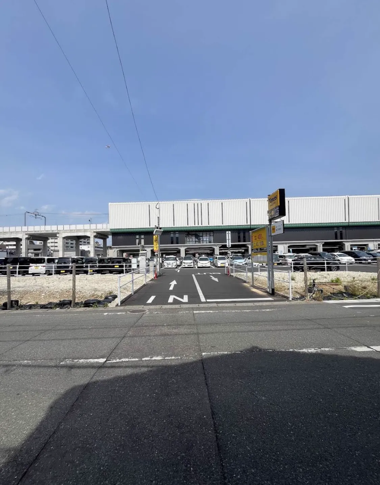
通いやすい環境
提携駐車場あり・駅チカ1分
桜並木駅から徒歩1分のアクセス。提携駐車場（タイムズ桜並木駅前）をご利用いただけます。料金は当院が負担いたしますので、お車の方もスムーズに施術を受けていただけます。
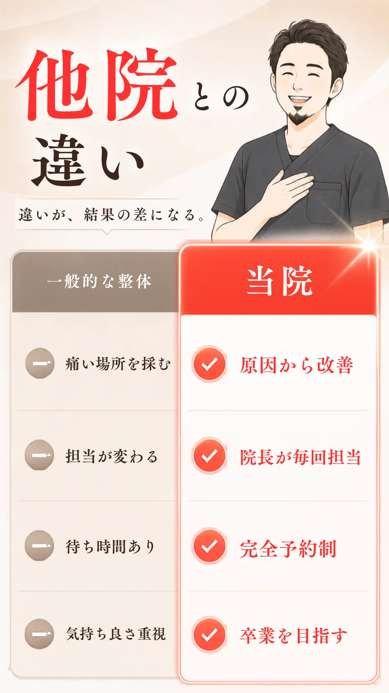
「今までの整骨院とは違う」
首の凝りと腰痛で悩んでいましたが、確実に良くなっているのを実感。継続したいと思える施術です。
生活習慣のアドバイスも的確
長年悩んでいた腰痛が良くなってきました。施術だけでなくアドバイスも的確。信頼できる先生に出会えました。
根本的に改善する治療法
マッサージも気持ち良いのですが、根本改善治療でどんどん体調が良くなっています。引き続き通います。
今までで1番自分に合った整骨院
辛かった肩こりも一度で楽になり、体が軽くなりました。キッズスペースもあります！
すっと姿勢が正された
施術後は自分でも驚くほど姿勢が改善。コスパ、先生の人柄、有資格者の施術、全てにおいて満足です。
一人ひとりに寄り添う姿勢
本気で体を良くしたい方におすすめ。技術も素晴らしく、終わった後は本当に体が軽くなっていました。
手技のみで30分しっかり
表層筋・深層筋合わせてアプローチしてくれて、週2日メンテナンスで通っています。今どき貴重な整骨院です。
最初の施術で腰痛が大幅改善
母の腰痛と自分の不調で通院。先生の親身な対応と清潔な院内で安心して施術を受けられます。
毎回赤ちゃん連れでも安心
産後の腰痛で来院。施術中は先生やスタッフがお世話してくれて助かりました。説明もわかりやすい。
駅徒歩1分のアクセス
ひどい肩こり・腰痛で来院。施術後は肩・首がスッと軽くなりました。無理な勧誘もなく自分のペースで通えます。
的確な施術で身体が軽く
腰の不調の原因を瞬時に見抜き、力加減も絶妙。対処法まで教えてくれる親切さに感謝です。
相談しやすい優しい先生
足腰の痛み、反り腰、巻き肩まで総合的に施術。駐車場代も負担してくれる心遣いが嬉しい。友人にもすすめます。
よくあるご質問
タイムズ桜並木駅前をご利用下さい。施術時間分の料金は当院が負担しますので、安心してご利用下さい。
症状や個人差がありますが、多くの方が3〜5回の施術で大きな変化を実感されています。初回のカウンセリングで、おおよその回数をお伝えします。
通常は ・深層筋集中整体＋初診料 → 7,500円 ですが… お試し体験 2,980円で受けていただけます。 2回目以降は ・保険施術：400〜800円程度 ・深層筋集中整体：5,500円 ※通いやすいプランもご用意していますが、 無理な勧誘は一切ありませんのでご安心ください。 ※初回体験時に、お身体の状態に合わせた最適な通い方をわかりやすくお伝えします！
最初は週1〜2回のペースをおすすめしています。改善に伴い、徐々に間隔を空けていきます。
10:00〜14:00 / 15:00〜20:00（月曜〜土曜・祝日）です。日曜日は休診です。
もちろんです！軽い症状のうちからケアすることで、重症化を予防できます。お気軽にご相談ください。
症状によっては健康保険が適用できる場合がございます。初回カウンセリング時にご確認ください。
初回はカウンセリング含め約60分、2回目以降は約30〜40分を目安としております。
いいえ、完全担当制です。毎回同じ施術者が担当するため、お身体の変化をしっかり把握しながら施術を行います。
現金のほか、各種クレジットカード、電子マネーがご利用いただけます。
お電話・LINEどちらでもご予約いただけますが、LINE予約がおすすめです。 施術中はお電話に出られない場合があるため、LINEの方がスムーズにご案内できます。 また、LINEでは空き状況の確認や24時間予約が可能です。 ご都合の良い時間を選んで、お気軽にご予約ください。
いいえ、当院では無理に関節を鳴らすようなボキボキ施術は行っておりません。 首・肩・背中の深層筋を中心に、手技でやさしく筋肉や関節の動きを整えていきます。 「整体が初めてで不安」「強い刺激が苦手」という方にも安心して受けていただける施術です。
もちろん大丈夫です。 当院には「整骨院や整体に行くのが初めて」という方も多く来院されています。 初回は現在のお悩みや生活習慣についてしっかりお話を伺い、お身体の状態を確認したうえで施術を行います。 わからないことや不安なことがあれば、その都度ご説明いたしますのでご安心ください。
その他のご質問も、
LINEからお気軽にどうぞ。
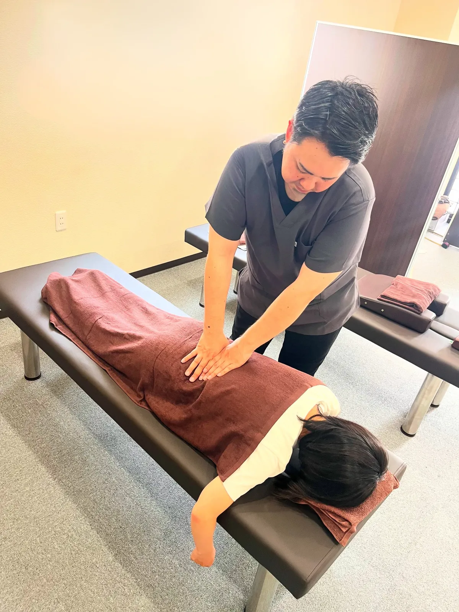
─ ご覧いただいたあなたへ ─
あなたが探していた
整骨院かもしれません。
「もっと早く来ればよかった」
これは多くの患者様からいただく言葉です。
もしあなたが
何度もマッサージを繰り返し
改善を諦めかけているなら
一度だけ当院へお越しください。
あなたのお身体に、
本気で向き合います。
※定員に達し次第、通常価格に戻ります。
＼ 初回特別価格でご予約いただけます ／
ご予約は
LINEから24時間受け付けています。
受付 10:00〜14:00 / 15:00〜20:00（月〜土・祝） 日曜休診
提携駐車場の料金は当院が負担します